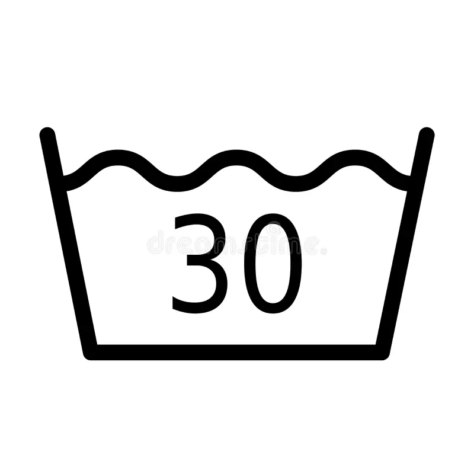

Produktinformation
Produktnamn: A&A Sustainable Hoodie
Beskrivning: Vår A&A Sustainable Hoodie kombinerar komfort med miljömedvetenhet. Tillverkad av ekologiska och återvunna material, erbjuder den värme och stil utan att kompromissa med planeten.
Fördelar:
60% ekologisk bomull för en mjuk och bekväm känsla.
Hållbar design som minskar koldioxidavtrycket.
Perfekt för både träning och avslappning.
Praktisk information:
Material: 60% ekologisk bomull, 30% polyester, 10% elastan.Tillverkningsland: Turkiet (bomull), återvunna material från EU.
Materialinformation
Miljöinformation
Koldioxidavtryck: 3.5 kg CO2 per plagg.Vattenanvändning: 700 liter per plagg.
60% ekologisk bomull
30% polyester
10% elastan
Transportkedja: Från råmaterial till kund
1. Råmaterial
Ekologisk bomull: Odlas på certifierade gårdar i Turkiet, där hållbara jordbruksmetoder används.Polyester: Tillverkas av återvunnen plast, insamlad från återvinningscentraler i EU.Elastan: Källan är en certifierad leverantör som följer miljöstandarder.Knappar: Tillverkade av återvunnet plastmaterial, vilket minskar behovet av ny råvara.
2. Produktion
Materialen skickas till en fabrik i Turkiet där de sys ihop av lokala arbetare under rättvisa arbetsförhållanden.
Färgerna som används är naturliga och miljövänliga, vilket minimerar kemikalieanvändningen.
3. Montering
Plaggen monteras noggrant i fabriken och kontrolleras för kvalitet innan de packas.
Varje plagg får en QR-kod och ett NFC-chip för spårbarhet och information om produkten.
4. Transport
Produkter transporteras med fartyg från Turkiet till hamnar i Europa för att minska koldioxidutsläpp.
Från hamnen transporteras plaggen med lastbil till distributionscentraler i Sverige.
Vi använder ruttplanering för att optimera transporteffektiviteten.
5. Distribution
Från distributionscentralerna skickas plaggen direkt till kunderna, med möjlighet till spårning av beställningar.
Kunder får information om hur de kan återvinna plagget efter användning via QR-koden.
Återvinning av produkten
Se vår video om hur du kan återvinna din A&A Sustainable Hoodie på ett miljövänligt sätt:
VIDEO
Tekniska specifikationer
Batchnummer: AAH2023-001Garantiperiod: 2 år
Användningsinstruktioner
Tvätta i 30° C, stryk på låg värme. Ej torktumling för att bevara materialens kvalitet.

Tvätta i 30° C
Stryk på låg värme
Ej torktumling
Cirkulär information
Återvinning: Produkten kan återvinnas som textil. Följ instruktioner på A&A:s hemsida för korrekt kassering.
Livscykelns slut: Använd A&A:s återvinningsprogram för att få rabatt på nästa köp.
Etikettinformation
Digital produktpass: QR-kod som länkar till DPP-webbsidan för mer information om produkten och dess hållbarhetsprofil.
NFC-chip: Inbyggt i etiketten för snabb åtkomst till produktinformation via mobiltelefon.
Krav på EU:s Digitala Produktpass
Unik produktidentifiering: Produkten ska visa en databärare kopplad till en unik produktidentifierare, fysiskt fäst vid produkten.Standardiserat format: All information i DPP måste följa öppna standarder och vara maskinläsbar, strukturerad och sökbar.Produktion detaljer: Passet måste inkludera produkt-specifik information, som modell, batch eller individuellt objekt.
Redo att göra ett hållbart val?
Klicka på knappen nedan för att beställa din A&A Sustainable Hoodie idag!
Köp Nu
Sociala bevis
Kundrecension: "Denna hoodie är den mest bekväma jag någonsin haft! Jag älskar att den är hållbar också!" - Emma L.